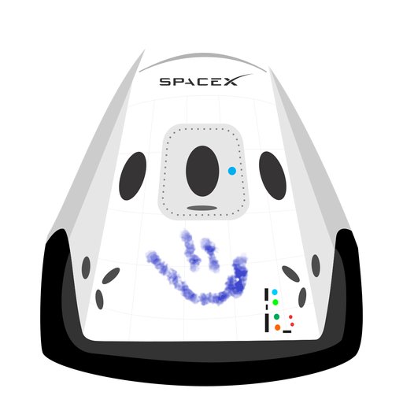

Hyperblog Tu blog de cabecera
Aquí inicia la historia de un gran proyecto
Y este es el párrafo de inicio donde vamos hablar las cosas increíbles que se pueden hacer con ramas

Los blogs son la mejor forma de compartir información y tus ideas. Mucho mas que ir a conferencias o salir en youtube.Excepto si eres un rockstar. Pero estadísticamente no lo eres.... por ahora.
Suscribete y dale like